Raw Godot 4.7.2 Compatibility captures, 1280 × 720 with 4× MSAA. Each pair uses the same scene, camera, pose and fixed shader clock. Click an image to inspect its native resolution. Scenery retains its opt-in setting. Evidence, budgets and limitations.
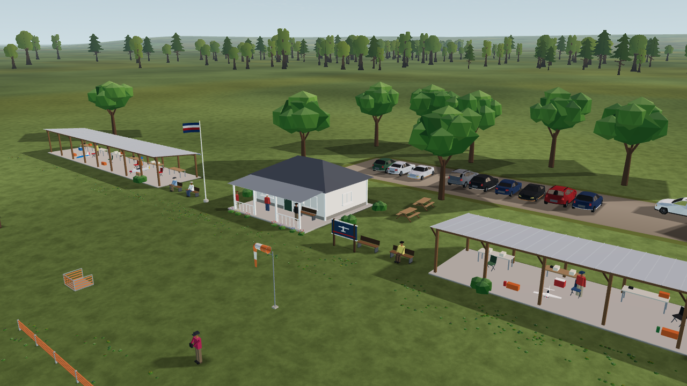
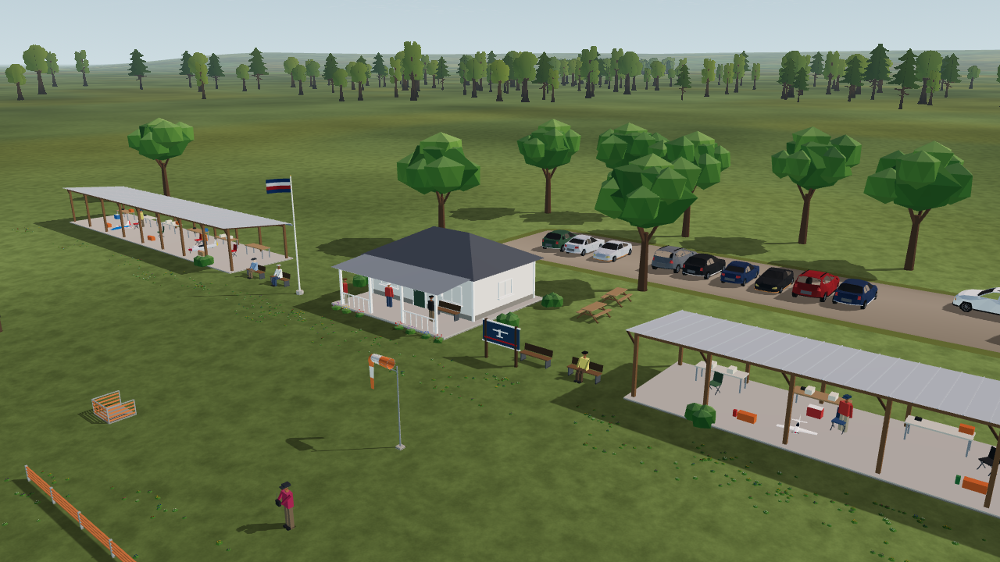
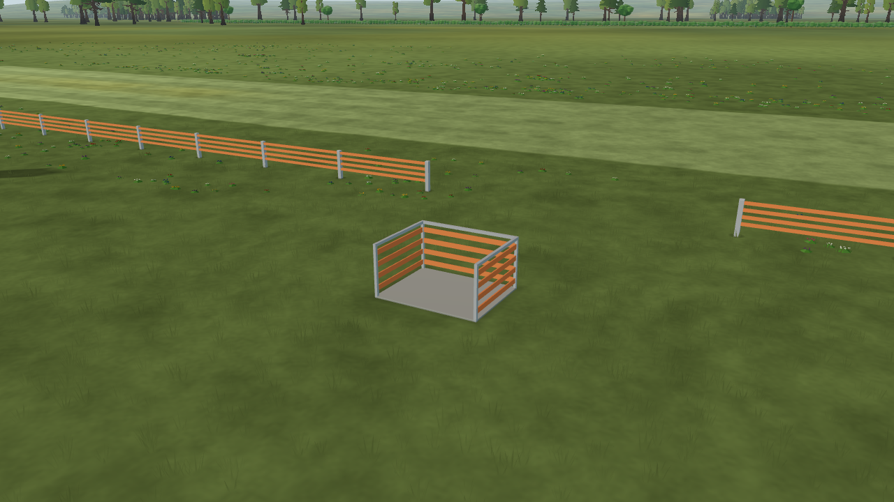
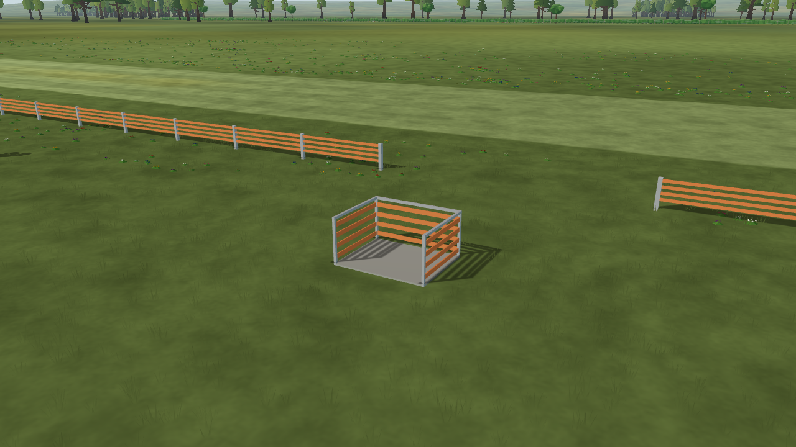
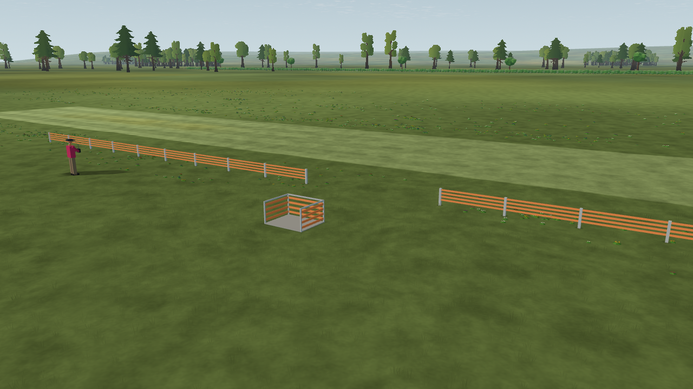
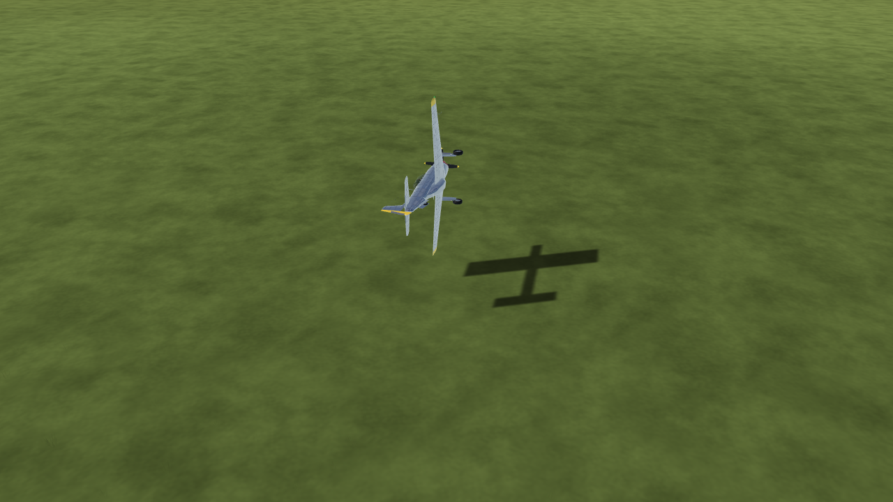
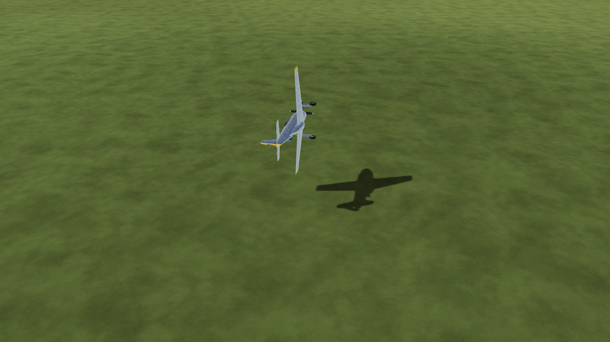
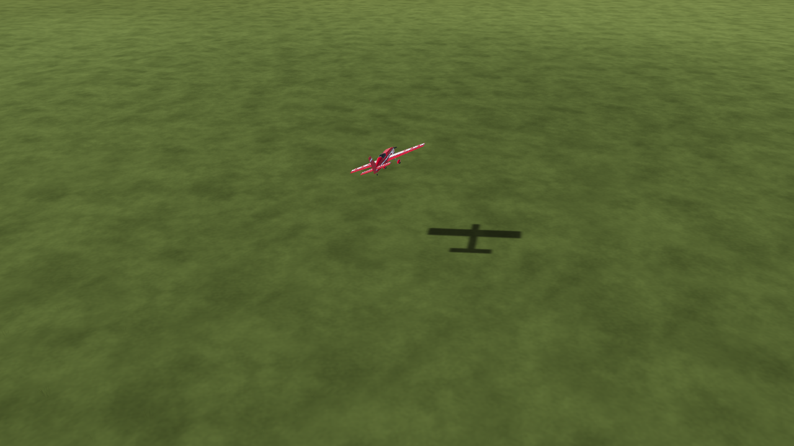
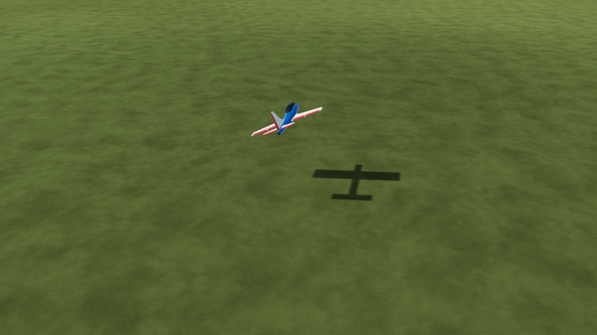
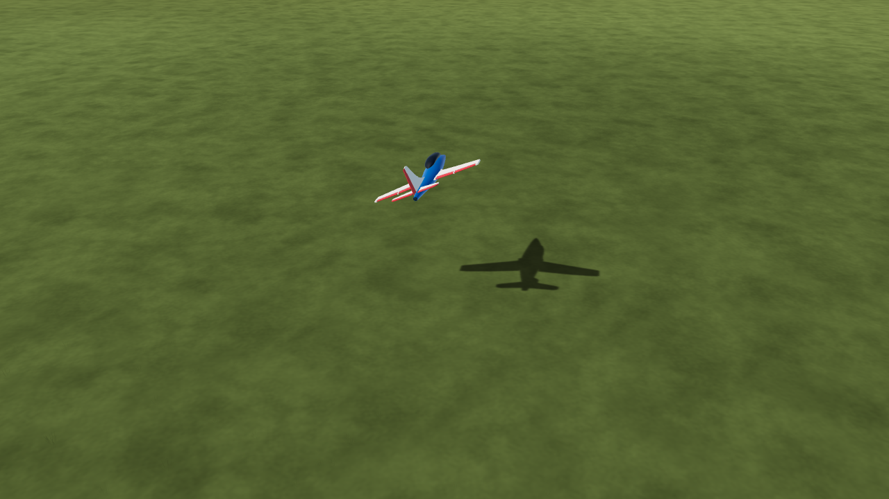
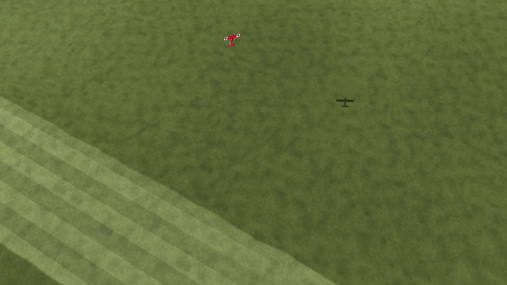